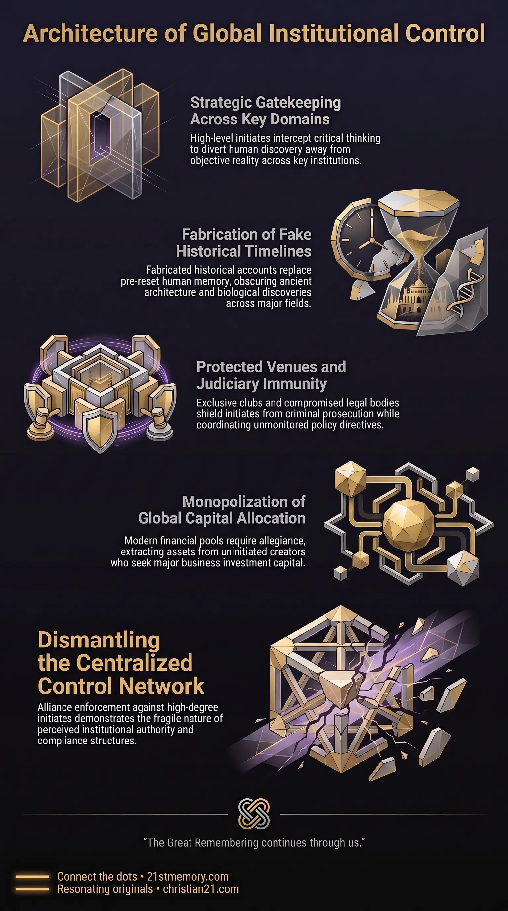

Architecture of Illusion
Architecture of Illusion — Freemasonic Orders as the institutional enforcement arm that keeps consciousness inside a curated simulation.
The Freemasonic Orders constitute the primary operational infrastructure of global parasitic control, functioning as an esoteric secret society network that infiltrates governance, finance, media, and academia.
Test your understanding of Freemasonic Orders — the esoteric secret society network that infiltrates governance, finance, media, and academia and maintains His Story.

Architecture of Illusion — Freemasonic Orders as the institutional enforcement arm that keeps consciousness inside a curated simulation.

How Freemasons Faked the Human Timeline — How The Craft built His Story to replace the memory of pre-reset civilizations.
The Freemasonic Orders constitute the primary operational infrastructure of global parasitic control, functioning as an esoteric secret society network that infiltrates governance, finance, media, and academia. Operating under the overarching umbrella of Occult Orders, Freemasonry enforces field inversion by manipulating human perception and controlling institutional leadership. Through the systematic indoctrination of initiates into the esoteric tradecraft known as The Craft, high-degree members manage legal fictions, enforce narrative compliance, and conceal the true history of Earth.
Freemasonic Orders serve as the institutional enforcement arm for parasitic custodians, bridging the gap between underworld crime networks, corporate financial consortiums, and public policy. Initiates at the highest tiers act as the functional gears of global power, viewing the uninitiated public merely as the fuel required to run the societal machine. By placing strategic Gatekeepers across every major domain of human endeavor, the order ensures that human critical thinking is systematically intercepted, keeping consciousness trapped within a curated simulation.
The primary function of Freemasonic Orders is the construction and maintenance of His Story, a fabricated historical timeline designed to replace the memory of pre-reset civilizations. When massive saurian remains were uncovered in Maastricht in 1778, Freemasonic gatekeepers immediately initiated disingenuous scientific debates to disprove their true nature as dragon fauna. Down through the ranks of the order, initiates pitched these discoveries under the newly invented classification of Dinosaurs, fabricating thousands of additional entries to obscure pre-colonization biology. Similarly, Freemasonic historians claimed that historical centers like the London Square Mile consisted of two-storey wooden structures to conceal ancient Tartarian Ashlar masonry and piezoelectric quartz granite buildings that stand over a thousand years old.
Institutional gatekeeping extends directly into academic and medical mockery. Freemasonic science deliberately framed the human appendix as a useless vestigial organ meant for digesting fecal matter, turning biological degradation into accepted medical canon. In the realm of global logistics and black-budget finance, high-level Freemasons use military authority and esoteric symbolism to transport illicit commodities—such as narcotics and trafficked assets—across international boundaries with complete impunity.
Capital allocation in the modern economy is strictly conditioned upon Freemasonic allegiance. High-net-worth investment pools, major corporate funding, and commercial consortiums are anchored through Freemasonic networks. Uninitiated inventors or entrepreneurs seeking significant capital are systematically funneled toward Freemasonic business operatives who extract or compromise their assets unless the individual integrates into the order.
The operational hierarchy of Freemasonry functions through strict reciprocal obligations between initiation tiers. High-degree members are bound to assist lower-tier initiates, creating a self-reinforcing network that offers commercial contracts, social elevation, and judicial immunity. This dynamic projects a public facade of civic philanthropy and humility while internally entrenching absolute loyalty to the order's objectives.
Political alignment is managed through dedicated private venues known as R&R Clubs. Venues such as the Reform Club catered to Liberal and Whig politicians, while the Charlton Club served Conservative MPs, providing unmonitored sanctuaries where political figures, industrial leaders, and lodge brothers coordinated policy and illegal operations away from public oversight.
Esoteric recognition relies on secret handshakes, visual symbols, and standardized motifs that allow initiates to identify one another across global domain lines. Historical maritime pirates adopted the Skull & Bones emblem specifically to signal their allegiance to The Craft and identify their operating authority to other cabal vessels at sea.
Media management and narrative suppression are directly overseen by high-tier lodge members. During significant anomalies or breaches—such as the 1947 craft retrievals in Roswell, New Mexico—33rd Degree newspaper owners and intelligence handlers immediately intervened to retract accurate news reports of flying discs, replacing them with weather balloon narratives to manipulate public consciousness. Furthermore, restricted geographic regions like Antarctica are strictly guarded; public access is prohibited under international treaties, and only sanctioned Freemasonic figures and knighted operatives are permitted to conduct controlled explorations and deliver curated reports.
Freemasonic Orders serve as the terrestrial administrative layer within the wider ecosystem of Occult Orders and Custodian Control. They operate in direct tandem with groups like the 322 Skull & Bones Club, whose subterranean meeting chambers mockery-decorate rooms built from post-reset bone vaults and cathedrals of the dead.
The order maintains lateral connections to global crime families and political bloodlines, providing the legal and administrative infrastructure required to sustain the human farm. Furthermore, Freemasonic architects repurposed Tartarian energetic hubs into modern Banks, replacing the original flow of positive aetheric energy with entropic financial Currency (current) routed through electrical wires and fiber-optic networks.
The pervasive reach of Freemasonic gatekeeping reveals that all official academic, scientific, historical, and medical consensus is a structured construct designed to maintain field inversion. Relying on institutional authority reinforces the simulation, as official credentials are cloth and title constructs designed to enforce compliance.
The dramatic emptiness observed in financial and political centers—such as London's Mayfair district in 2026—is the direct result of military tribunals and executions targeting 33rd Degree Initiates for their systemic crimes against humanity. Because high-degree Freemasons were fully aware that public medical interventions were bioweapons and refused them, their sudden absence confirms widespread enforcement actions by Earth Alliance and G.A.A. forces. Dismantling this control network requires breaking individual reliance on Perceived Knowledge, rejecting fabricated historical timelines, and recognizing that human consciousness and intelligence precede all physical institutional constructs.
This topic is free to share. Support the archive →